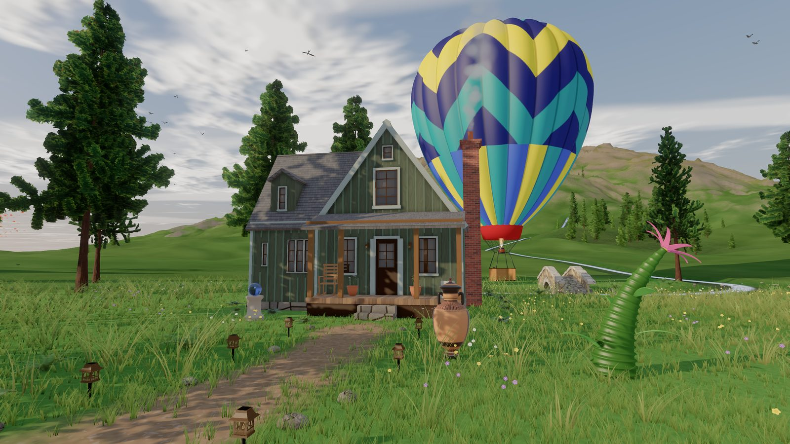
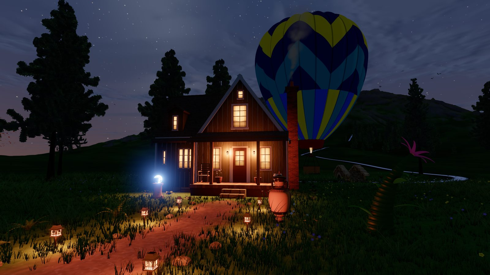
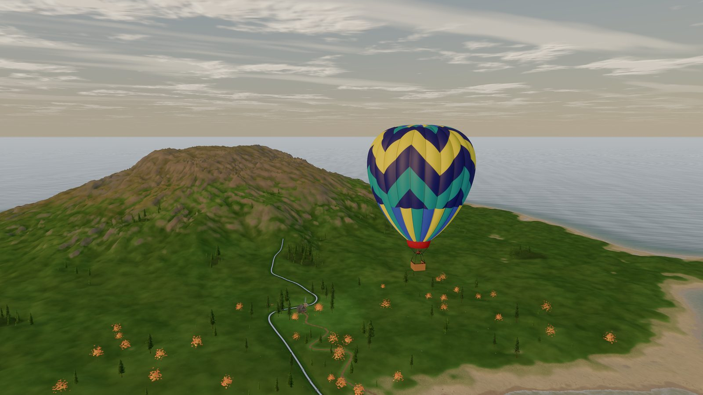
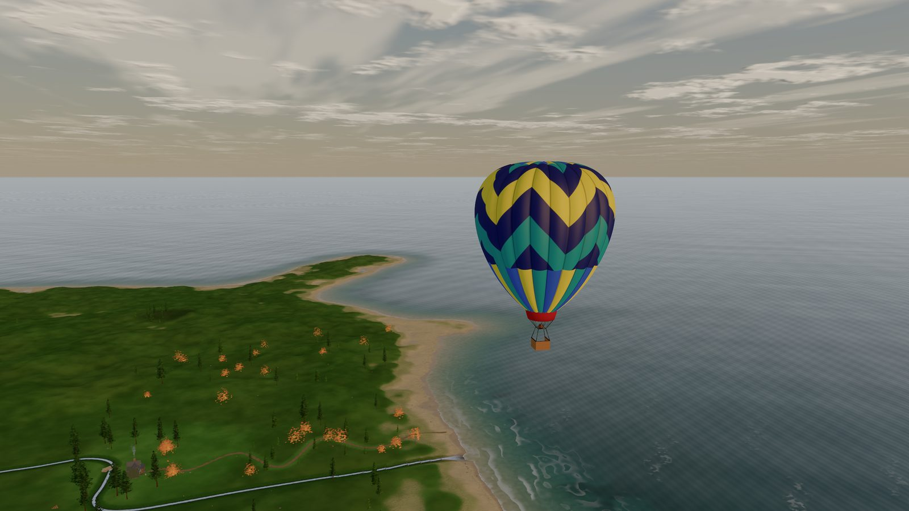
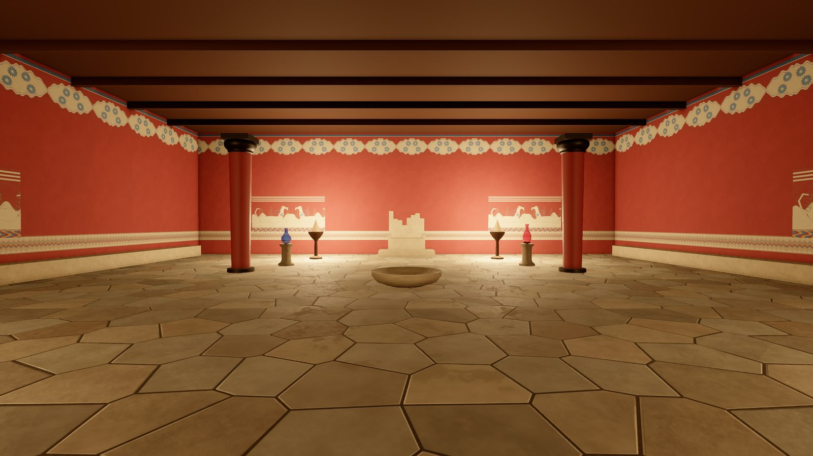
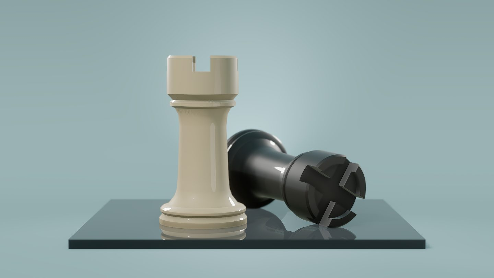

Early views of what's coming






Places you could step into
- Travel
Fly a winged horse over Iceland's fjords under the aurora.
- History
Walk the palace of Knossos as it stood.
- Wonder
Climb a staircase out of an Escher drawing.
- Play
Meet friends on an island of your own, from a link.
- Learning
A science museum you walk into, the tree of life around you.
- Space
Stand on another world and watch its two moons rise.
- Shopping
A shop you browse by walking through it.
- Making
A place you make yourself and share as easily as a photo.
Worlds as easy to visit as pages
It arrives almost at once.
A world travels as a compact description, and your own computer builds it as you arrive. A whole hot-air balloon fits in less space than a thumbnail photo: hundreds to thousands of times smaller than the models it replaces.
It looks like a real place.
A sun and moon that cross the sky, clouds and weather, light through glass, lanterns that come on at dusk. Cinematic, and alive.
It's one link away.
Worlds link to each other the way pages do. Step from one into the next, and meet your friends there.
The island is being finished now.
New previews appear here as it grows. Come back and see what's changed.